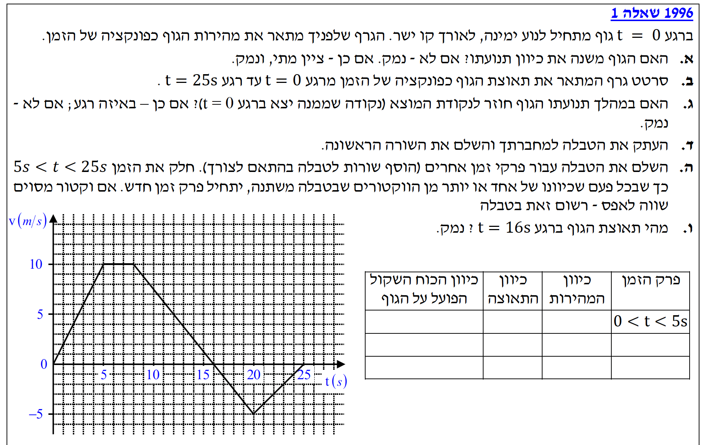
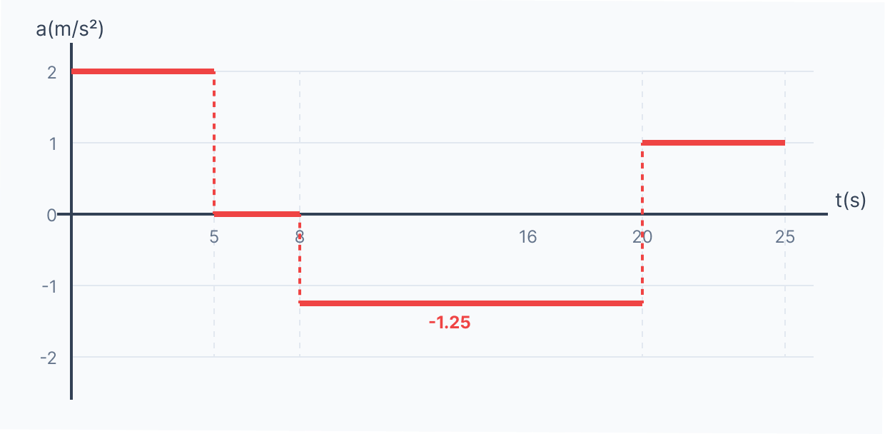

פתרון מודרך, צעד-אחר-צעד, כולל גרפים וטבלאות

האם הגוף משנה את כיוון תנועתולך במהלך 25 השניות? ואם כן – באיזה רגע זה קורה.
ניתוח גרפי איכותי – כיוון התנועה נקבע על ידי סימן המהירות (\( v \)).
בגרף מהירות-זמן, כיוון התנועה משתקף בסימן המהירות:
כאשר המהירות חיובית (הגרף מעל ציר הזמן), הגוף נע בכיוון החיובי (ימינה).
כאשר המהירות שלילית (הגרף מתחת לציר הזמן), הגוף נע בכיוון השלילי (שמאלה).
נתבונן בגרף: מרגע \( t = 0\text{ s} \) ועד לרגע \( t = 16\text{ s} \), הגרף נמצא בחלקו החיובי (מעל לציר). ברגע \( t = 16\text{ s} \) הגרף חותך את ציר הזמן (\( v = 0 \)), ומייד לאחריו, החל מ- \( t = 16\text{ s} \) ועד \( t = 25\text{ s} \), הגרף נמצא מתחת לציר (מהירות שלילית). כלומר, הגוף החל לנוע שמאלה.
לשרטט במדויק גרף של התאוצה כפונקציה של הזמן מרגע \( t = 0\text{ s} \) ועד \( t = 25\text{ s} \).
התאוצה בכל רגע שווה לשיפוע של גרף המהירות-זמן באותו רגע. נחשב את השיפוע (התאוצה) עבור כל קטע ישר בגרף הנתון:
כעת, נשרטט את גרף התאוצה כפונקציה של הזמן על סמך הערכים שחישבנו (הגרף הוא "גרף מדרגות"):

האם הגוף חוזר אי פעם במהלך ה-25 שניות לנקודת המוצא שלו (\( x = 0 \))?
כדי לדעת אם הגוף חזר לנקודת ההתחלה, עלינו לבדוק אם סך ההעתק שלו בסוף התנועה מתאפס או הופך שלילי. נחשב את העתק הגוף על ידי חישוב השטחים בגרף המהירות.
העתק חיובי (תנועה ימינה): בין הזמנים \( t=0 \) ל- \( t=16\text{ s} \), הגרף יוצר צורת טרפז.
בסיס תחתון: \( 16 - 0 = 16 \).
בסיס עליון: \( 8 - 5 = 3 \).
גובה: \( 10 \).
\[ \Delta x_{\text{right}} = \frac{(16 + 3)}{2} \cdot 10 = \frac{19}{2} \cdot 10 = 95\text{ m} \]
כלומר, ברגע החזרה לאחור, הגוף נמצא במרחק 95 מטרים ימינה מנקודת המוצא.
העתק שלילי (תנועה שמאלה): בין הזמנים \( t=16 \) ל- \( t=25\text{ s} \), הגרף יוצר צורת משולש (מתחת לציר).
בסיס: \( 25 - 16 = 9 \).
גובה: \( -5 \).
\[ \Delta x_{\text{left}} = \frac{9 \cdot (-5)}{2} = \frac{-45}{2} = -22.5\text{ m} \]
מיקום סופי:
\[ x_{\text{final}} = 0 + 95 - 22.5 = 72.5\text{ m} \]
הגוף נע 95 מטרים ימינה, ואז חזר רק 22.5 מטרים שמאלה. מכיוון שהמיקום הסופי שלו (\( 72.5\text{ m} \)) הוא עדיין מימין לנקודת המוצא, הוא לא הספיק לחזור אליה כלל במהלך זמן זה.
לחלק את כל זמן התנועה (\( 0 < t < 25 \)) לפרקי זמן שבהם מתרחש שינוי כלשהו בכיוון המהירות, בכיוון התאוצה או בכיוון הכוח השקול, ולמלא את מאפייניהם בטבלה.
כדי למלא את הטבלה, נשתמש בכללים הבאים: 1. כיוון המהירות: מעל הציר = ימינה, מתחת לציר = שמאלה. 2. כיוון התאוצה: שיפוע עולה = ימינה, שיפוע יורד = שמאלה, שיפוע אפס = אפס. 3. כיוון הכוח השקול: על פי החוק השני של ניוטון, הכוח השקול תמיד זהה בכיוונו לתאוצה! לכן עמודה זו תהיה תמיד העתק זהה של עמודת כיוון התאוצה.
| פרק הזמן | כיוון המהירות | כיוון התאוצה | כיוון הכוח השקול |
|---|---|---|---|
| 0 < t < 5s | ימינה (+) | ימינה (+) | ימינה (+) |
| 5s < t < 8s | ימינה (+) | אפס | אפס |
| 8s < t < 16s | ימינה (+) | שמאלה (-) | שמאלה (-) |
| 16s < t < 20s | שמאלה (-) | שמאלה (-) | שמאלה (-) |
| 20s < t < 25s | שמאלה (-) | ימינה (+) | ימינה (+) |
את התאוצה של הגוף באותו רגע (\( t = 16\text{ s} \)), והסבר לכך.
כפי שראינו בבניית גרף התאוצה (בסעיף ב'), הרגע \( t = 16\text{ s} \) נמצא בתוך פרק הזמן שבין \( t=8 \) ל- \( t=20 \). לאורך כל פרק הזמן הזה, שיפוע גרף המהירות הוא קו ישר אחד בעל שיפוע קבוע: \[ a = -1.25\text{ m/s}^{2} \] העובדה שמהירות הגוף מתאפסת ברגע זה אינה אומרת שהתאוצה מתאפסת. התאוצה היא קצב השינוי של המהירות. באותו רגע ממש, המהירות משתנה מחיובית לשלילית (מימינה לשמאלה) בקצב קבוע של \( -1.25\text{ m/s}^{2} \). הגוף חווה כוח רצוף שמאלה שמאלץ אותו לעצור ולהסתובב.